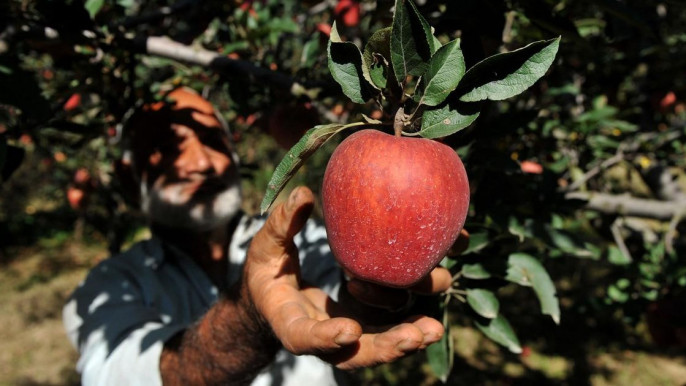

Kashmiri apple demand growing in Bangladesh

20 November 2023
Many Bangladeshi traders have set up camp at Sopore of Jammu and Kashmir in India to fulfill a growing demand for Kashmiri apples in Bangladesh, reports Kashmir News Prime World.
The demand for Kashmiri apples in Bangladesh has seen a significant uptick in recent years, positioning it as a promising market for the fruit, said Moin Uddin, a Bangladeshi trader involved in the apple trade in Kashmir for nearly a decade.
Fayaz Ahmad Malik, president of the North Kashmir Apple Growers Association, said an average of 25-30 trucks loaded with Kashmiri apples depart from Sopore Fruit Mandi to Bangladesh.
"During peak season almost 30 trucks loaded with apples leave for Bangladesh. The dealers from Bangladesh buy American variety apples which have a good demand in the neighboring country," he said.
Malik highlighted that approximately 20% of the total apple produce from north Kashmir is shipped to Bangladesh annually, with optimism that Bangladesh will become one of the leading buyers of Kashmiri apples in the coming years.
However, he also noted that the imposition of export duty by the Bangladeshi government has become a hindrance to large-scale exports.
Currently, the export duty amounts to Rs95 per kilogram of apples, totaling Rs22 lakh per truck loaded with apples.
Malik said Kashmiri traders could benefit significantly if this export duty were lifted.
In response to the growing demand, exporters from Kashmir are actively collaborating with Bangladeshi distributors and retailers to establish a smooth supply chain.
This collaboration not only benefits apple growers in Kashmir but also opens up new avenues for economic cooperation between the two regions.
Ghulam Mohammad Bhat, a grower associated with Bangladeshi dealers to sell his apple produce, mentioned that Sopore Fruit Mandi has become a potential market for the American variety of apples. Growers from other districts also prefer selling this variety in Sopore mandi due to the better rates offered by Bangladeshi dealers.